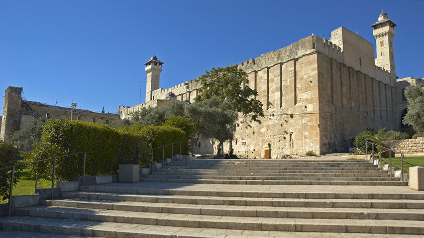
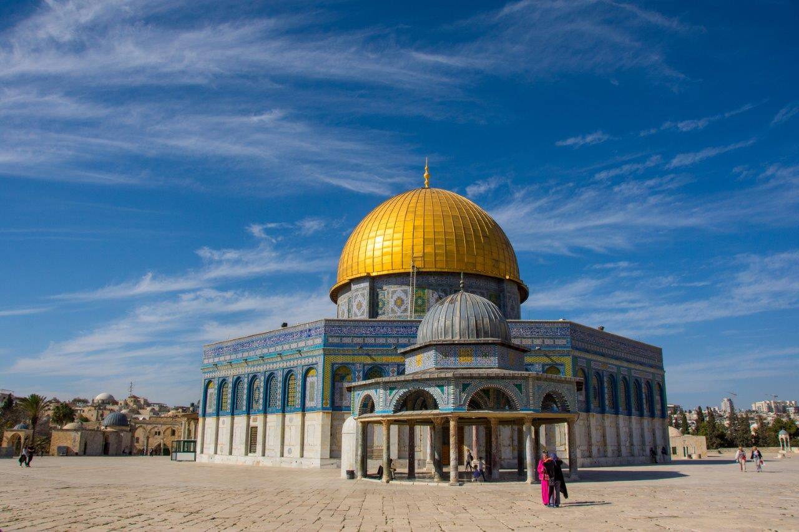
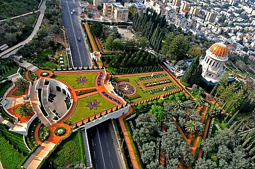
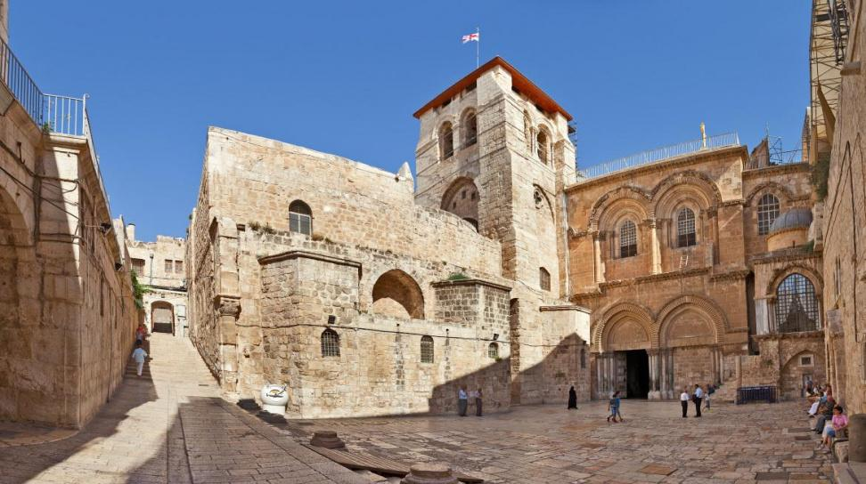
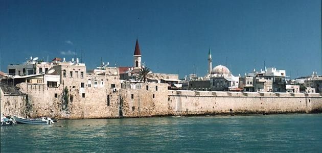

Discover the Grandeur of Ancient
Palestinian Civilization
Palestine Heritage
Discover special videos showcasing the most important historical sites.
Show MoreDiscover the Grandeur of Ancient
Palestinian Civilization
Discover special videos showcasing the most important historical sites.
Show MoreGaza; the city of resilience currently writing a legendary epic of survival. More than just a geography, it is the memory of civilizations from the Canaanites to the modern era . Despite the systematic destruction of its landmarks, its broken minarets and ancient churches remain witnesses to our eternal right and the Palestinian capacity to rise from the rubble and rebuild what was destroyed....

An icon of Islamic architecture and the oldest preserved landmark
View Details
Located in the heart of Hebron, it is the world's oldest sacred structure still in use, housing the tombs of the Patriarchs.
View Details (1).webp)
An architectural gem from the Umayyad era, famous for its intricate floor mosaics and the iconic "Tree of Life."
View Details
The largest and oldest mosque in Gaza, a symbol of architectural evolution from the Byzantine era to the Islamic golden age.
View Details
A sacred symbol of heritage and faith in Jerusalem.
view details
The magnificent terraced gardens in Haifa, known for their symmetry and breathtaking views of the Mediterranean.
view details
One of the most sacred sites in the Christian world, housing the Edicule and the site of Golgotha in the Old City of Jerusalem.
view details
The majestic Ottoman-era walls that protected the city for centuries, offering a stunning view of the Mediterranean Sea.
view details